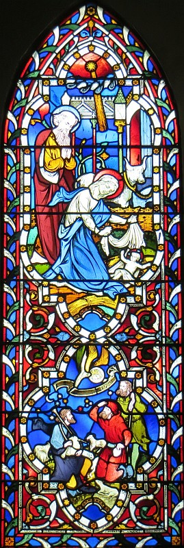

Le 20 d'Dézembre 2003, et chais un pliaisi comme trejous, pour mé, Clifford Laisney d'vos presenter un p'tit discours dans ma langue natif de Jerri.
Chais surprannant comme tchi qu'l'année s'est passée si vite. I r's'emblye que ch'tait qu'tchiques mais d'pis que j'taimes a célebrer les fêtes de Noué passé, et nos v'la arrivée au Noué de 2003. I'a des gens tchi disent que chais l'age tchi c'mmenche a dépasser, J'em demande!
Sans doute, i'a deja tchiques s'm'naines que l'excitement d'Noué est auve nous. Dans la majorité d'cas, les cartes sont postées, les cadeaux acatées, le picot et l'morceau d'lard sonts dans l'refrigerateu, le pôdin et la gache de Noué sonts faits et décorées, l'arbe d'Noué et décorations sonts en pliaiche et pathaisses pus belles que janmais, et j'sis seux qu'ou n'avez pas oublier une chose hardi importantes. Noué s'ethait pas Noué sans aver eune bouteille ou deux d'rouoge et blianc vin pour la tablye. Ch'est une chose nécessaithe pour aidgi la digestion suivant un r'pas tchi nos met trejous mal comfortablye pour le restant du jour.
Oui, j'passons des s'm'naines en prépathation des fêtes, et a la fin du compte, pas seulement la lassitude de nos efforts, mais la bourse et la carte d'plastic authons prins un telle choc, tchi faudra tchiques mais en orde de balanchi les comptes et d'èrtoun'né dans une position de nive.
Mais est-ce que j'n'avons pas oublier tchiquechose bein importante dans toute not tintamath'thie d'prèpathathions. Bouone Gens, la vraie raison d'celebrer Noué dans l'calendrier chrêtien est la celebration de la naissance de Jésû Christ not Sauveur. Ecouteuz, que j'vos raconte l'histouaithe de la naissance du Rouai des Rouais, not Seigneur Jésû Christ, comme raconté dans l'evangile selon Saint Luc.

|
Dans l'temps du regne de César Auguste, i fut necessaithe de faithe un récensement de tuous l's'habitants du pays, et comme ch'la, tous allaient pour etre eng'ristrées. Et d'même Joseph, etant d'la ville de Nazareth fit son c'min a la ville de Béthlehem auve Marie sa femme tchi portait efant. Tandis tch'ils 'taits la, le temps arrivi pour Marie a donner maissance, et d'même le p'tit fut né, et etant tch'in y'avait pas d'pliaiche dans l'hotellerie, ou pliaichi le p'tit éfant dans une crêche dans une etablye. Et y'avait dans chutte comtrée, des bergers tchi gardaient lus troupieaux dans les veilles de la niet, et tout d'un coup une ange du Seigneur se presenti, et la glouaithe du seigneur se resplendit autou d'ieux, et i futes saisis d'une grande peux. Et l'ange lus dit: Néyiz pas d'peux, car j'vos announce une grande jouaie tchi setha pour tout l'monde. Aniet, dans la ville de David, le Sauveur tch'est l'Christ le Seigneur, vos est né. Allez donc rencontrai chu p'tit efant tch'ou trouv'thez emmailloté et couochi dans une crêche. Et au même instant une multitude de l'armée celeste s'appathi, louant Dgieu et disant: "Glouaithe a Dgieu, au pus haut des ciels, paix sus la terre, bouonne volonté vers les hommes." Et un coup que les anges futent èrtoun'nés au ciel, les bergers lus ontes ditent: V'nez donc jusqu's Béthlehem, et viyons chein tchi s'est arrivé, que le Seigneur nos a dit. Et d'même I futent directement, et trouvites Marie et Joseph, et le p't'chiot tchi 'tait couochi dans sa crêche. et l'ayant veu, I publiites tout chein tch'ils avaits veu concernent l'p'tit efant. Et tuous les siens tch'ils s'entendites 'taits remplyis d'admiration a chein que les bergers lus disaits. Et Marie erfletchi sustoutes chés choses si prés d'son tchoeu. Et les bergers ertouon'nites a lus siez ieux, glorifiant et louant Dgieu pour tout tch'ils avaits veu, tchi conformé exactement comme les anges avaits predit. |
Viyiz étout: